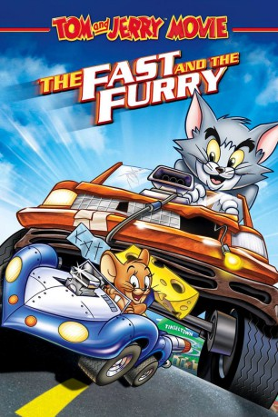

#6183 Tom und Jerry - Mit Vollgas um die Welt
Alternativ: Tom and Jerry: The Fast and the Furry
 
 IMDB-Wertung: 6.5 / 10
IMDB-Wertung: 6.5 / 10  Metascore: 0
Metascore: 0 
Tom und Jerry haben bei einer wilden Verfolgungsjagd das ganze Haus verwüstet. Toms Frauchen setzt die beiden daraufhin vor die Tür. Tom und Jerry haben aber schnell einen Plan B gefunden. Sie gehen zu einer Fernsehsendung, bei dem die Teilnehmer mit selbstgebauten Autos Rennen fahren. Perfekt für die beiden! Denn der Sieger des Rennens bekommt eine Luxusvilla geschenkt. Wer wird das spannende Rennen gewinnen?
Jahr: 2005
Dauer: 74 Minuten
FSK:
Land: USA Studio: Warner Bros. AnimationTonspuren:
Untertitel:
Auflösung: SD (720x400) Größe: 796 MB
Genre: Action, Komödie, Abenteuer, Animation/Trick, Familie, Sport
Regisseur: Bill Kopp
Drehbuch: Jerome Cady
Soundtrack:
Darsteller:
Datei: X:\Kinder Collections\Tom und Jerry\Tom und Jerry - Mit Vollgas um die Welt (2005, FSK, 720x400).avi seit 10.05.2017
Festplatte: Kinder-Filme+Trick
 Es gibt insgesamt 16 Filme in der Gruppe 'Kinder Collections\Tom und Jerry'
Es gibt insgesamt 16 Filme in der Gruppe 'Kinder Collections\Tom und Jerry'